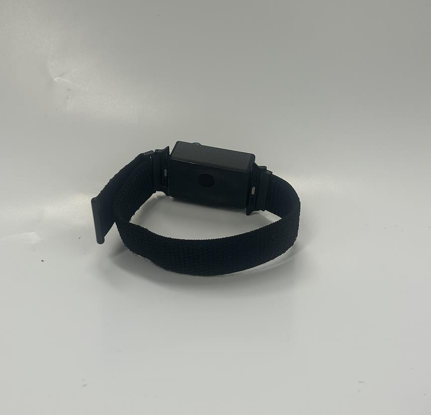
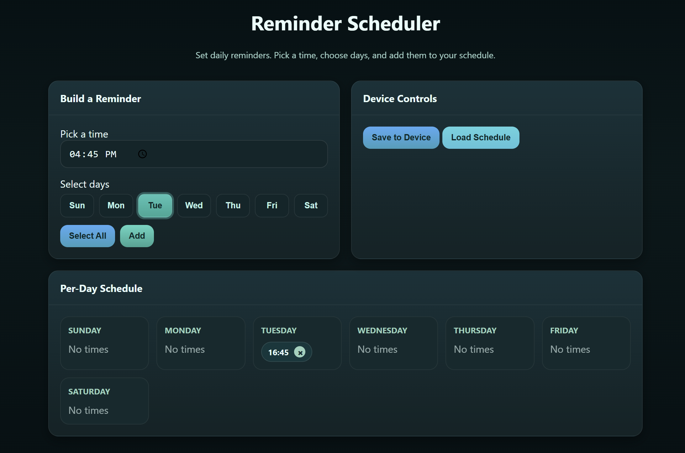
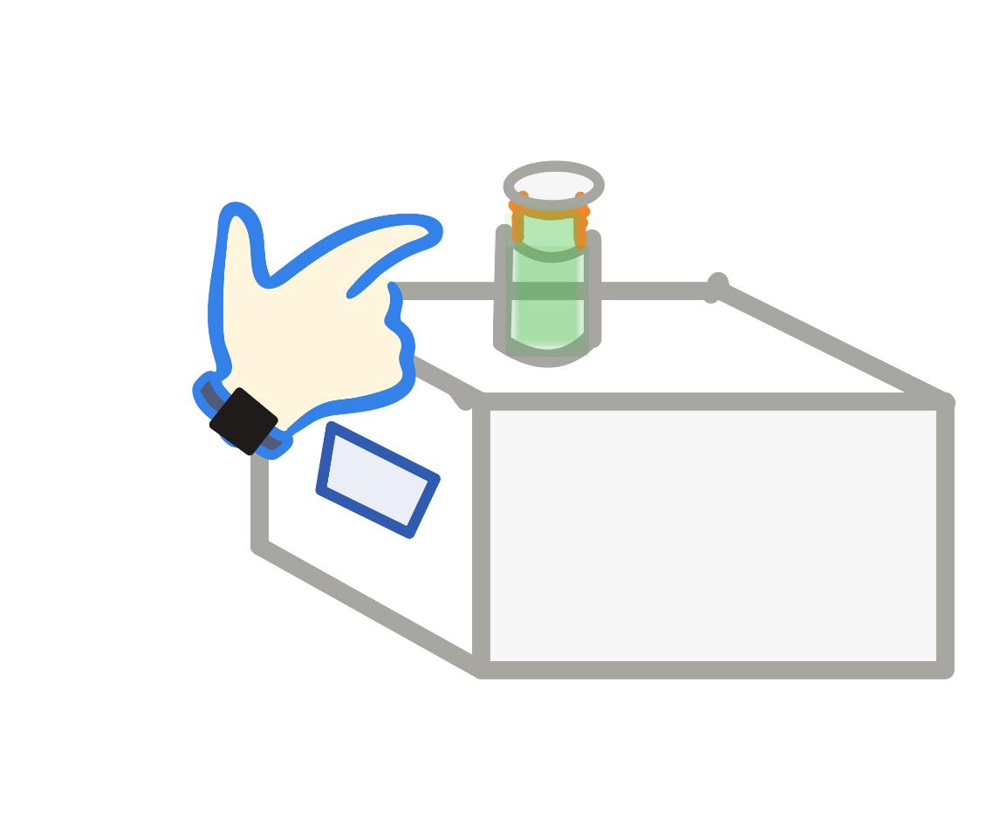

Concept generation
Generated candidate solutions and helped screen them against usability, feasibility, and course constraints.
EGR 101 Design · Fall 2025
A connected wristband and pill-bottle system designed to help adults with ADHD notice medication reminders and confirm that the correct bottle was opened.


How could a medication reminder be difficult to overlook without becoming another phone notification that is easy to dismiss?
Our team focused on adults with ADHD and proposed a wearable alert that connected to a scheduled medication and a tagged pill bottle. The goal was not simply to send a reminder, but to connect the alert to a physical confirmation step.
My work centered on turning a broad problem into a physical concept that the team could compare, build, wear, and test.
Generated candidate solutions and helped screen them against usability, feasibility, and course constraints.
Created wristband CAD and used medium-fidelity models to evaluate form, fit, component placement, and how the device would be worn.
Adjusted the physical concept as the electronic components and system architecture became more concrete.


Alert detections
Successful NFC scans
Demonstrated connectivity
RTC-enabled runtime
These were team-level prototype results under limited course testing, not evidence that the system improved medication adherence. A stronger evaluation would require representative users, a longer study period, and clearer measures of usability and adherence behavior.
Battery life initially missed the four-day requirement: the Wi-Fi-only version ran for about 14 hours. Moving reminder timing to a real-time clock increased the measured runtime to approximately 14 days.